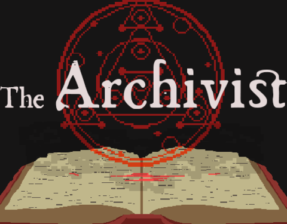

The Archivist
A 2d pixel art dark academia platformer

Summer Breeze
A multi-player puzzle game.
Enthusiastic, positive, organised Game Developer and Programmer whose projects aim to push modern ideas and impact others.

A 2d pixel art dark academia platformer
A multi-player puzzle game.